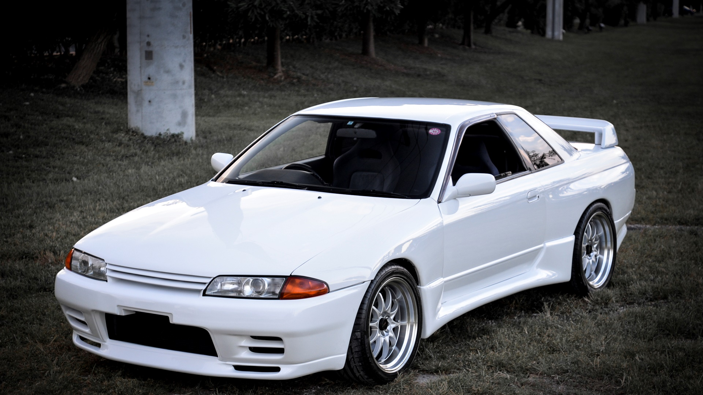

The Legacy Of R32
Launched in 1989, the Nissan GT-R R32 revolutionized the automotive world, earning the legendary nickname "Godzilla" for its dominance on the track. Equipped with the advanced ATTESA E-TS all-wheel-drive system and the RB26DETT twin-turbo inline-six engine, it crushed the competition in Group A racing, winning every championship it entered. The R32 set the foundation for the GT-R legacy, blending cutting-edge technology with raw performance, making it one of the most iconic JDM cars of all time.